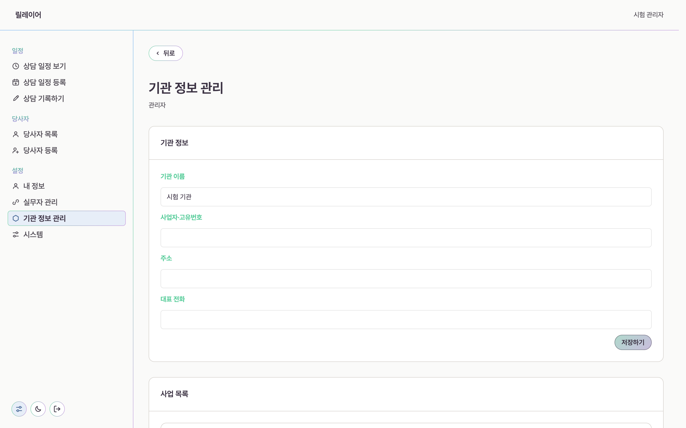
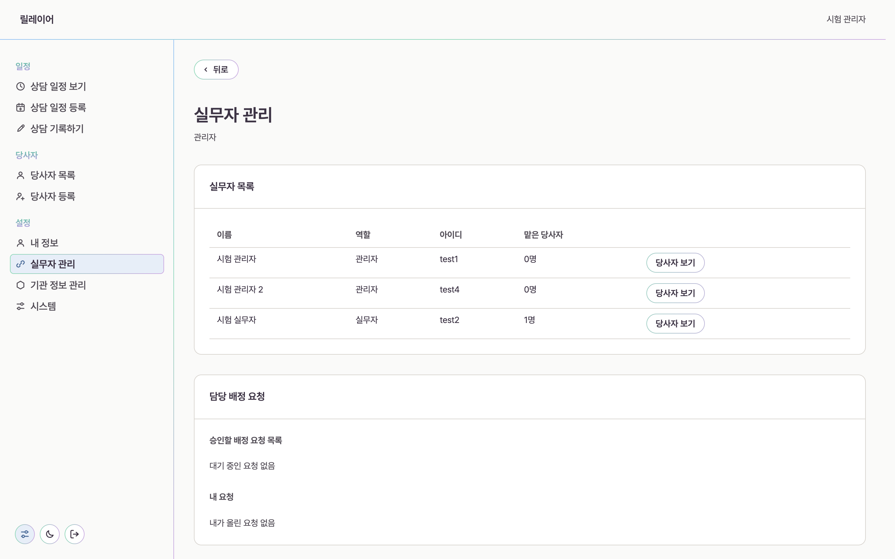
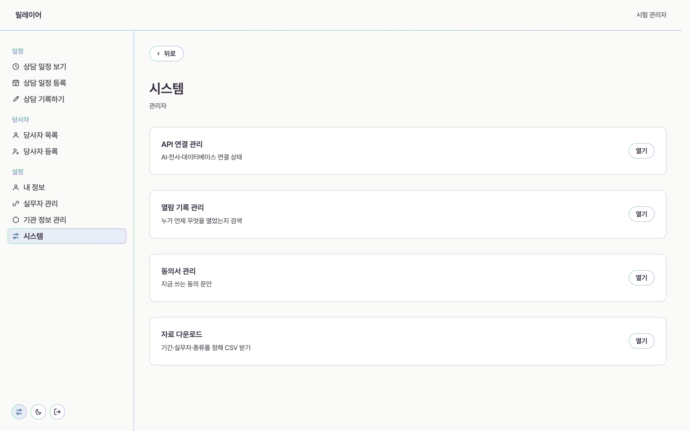

관리자 가이드
기관을 처음 여는 사람을 위한 안내입니다. 순서대로 다섯 단계를 지나면 실무자가 상담을 기록할 수 있습니다.
For administrators
기관 열기
사용해 보기에서 관리자 계정을 만듭니다. 이 문은 기관의 첫 관리자 한 명에게만 열리고, 계정이 생기면 영구히 닫힙니다. 그 뒤에 들어오는 사람은 초대 링크로만 계정을 만듭니다.
계정을 만들면 설정 마법사가 바로 열립니다. 단계는 다섯입니다.
-
기관 워크스페이스 기관 이름을 넣고 만듭니다. 이 이름이 실무자 화면 맨 위에 보입니다.
-
기관 정보 사업자 번호나 고유번호, 주소, 대표 전화를 채웁니다.
-
사업 상담을 붙일 사업을 하나 이상 등록합니다. 당사자는 사업 아래에 놓입니다.
-
실무자 초대 함께 일할 사람에게 초대 링크를 만들어 전달합니다.
-
외부 서비스 연결 전사와 요약에 쓰는 연결 상태를 확인합니다.
마법사를 마치기 전까지 실무자에게는 기관 준비 중만 보입니다. 사업 목록과 연결까지 마친 뒤에 열립니다.
기관 정보와 사업
마법사를 마친 뒤에는 기관 정보 관리에서 같은 값을 언제든 고칩니다. 위 카드가 기관 정보, 아래 카드가 사업 목록입니다.

끝난 사업은 내리기로 목록에서 내립니다. 이미 그 사업으로 진행한 상담 기록은 지워지지 않고 그대로 남습니다.
실무자 초대
계정을 대신 만들어 주지 않습니다. 역할을 고르고 초대 링크를 만들어 전달하면, 받은 사람이 자기 비밀번호로 계정을 만듭니다.

창을 닫으면 다시 볼 수 없습니다. 바로 복사해 전달하세요. 링크는 7일이 지나면 스스로 닫히고, 그전에 회수할 수도 있습니다.
역할은 관리자와 실무자 둘입니다. 관리자는 기관 설정과 열람 기록까지 봅니다. 상담 내용은 배정된 실무자만 엽니다.
담당 배정
당사자는 담당 실무자에게 배정된 뒤에 그 사람 화면에 나타납니다. 실무자가 올린 요청은 실무자 관리 아래 담당 배정 요청에 모입니다.
- 실무자가 담당 배정 요청에서 요청을 올립니다.
- 관리자가 승인할 요청 목록에서 승인합니다.
- 승인한 뒤부터 그 실무자의 당사자 목록에 보입니다.
배정에서 빠진 사람은 상담 기록과 녹음, 전사문을 열 수 없습니다. 이전에 받은 링크로도 열리지 않습니다.
연결과 기록
시스템에는 관리자만 쓰는 네 가지가 있습니다.

- API 연결 관리에서 요약, 전사, 데이터베이스 연결 상태를 봅니다.
- 열람 기록 관리에서 누가 언제 무엇을 열었는지 찾습니다.
- 동의서 관리에서 지금 쓰는 동의 문안을 봅니다.
- 자료 다운로드에서 기간과 실무자, 종류를 정해 CSV로 받습니다.
동의 문안을 고치면 그때부터 받는 동의에 적용됩니다. 이미 받은 동의는 그때의 문안을 그대로 보관합니다.
아직 하지 않는 것
지금은 합성 데이터로 시험하는 단계입니다. 실제 상담 자료는 다음 네 가지를 갖춘 뒤에 넣습니다.
- 개인 정보와 민감 정보 두 영역의 동의 기록
- 누가 무엇을 열었는지 남기는 열람 기록
- 사람이 쓴 글의 암호화
- 백업과 복구 확인
당사자 로그인 계정은 만들지 않습니다. 당사자는 담당 실무자가 보낸 링크와 여섯 자리 숫자로 자기 기본 정보와 일정만 봅니다.
막힐 때
초대 링크를 잃어버렸습니다
다시 볼 수는 없습니다. 이전 링크를 회수하고 새로 만들어 전달하세요. 회수하지 않아도 7일이 지나면 닫힙니다.
실무자가 당사자를 못 본다고 합니다
배정이 아직 승인되지 않았을 수 있습니다. 실무자 관리에서 승인할 요청 목록을 확인하세요.
관리자를 실무자로 내릴 수 있나요
다른 사람을 관리자로 세운 뒤에 내릴 수 있습니다. 마지막 관리자는 내려갈 수 없습니다.
실무자가 기관 준비 중만 본다고 합니다
설정 마법사가 아직 끝나지 않았습니다. 사업 목록과 외부 서비스 연결까지 마치면 열립니다.
실무자가 하루를 어떻게 쓰는지도 함께 읽어 보세요.
사용자 가이드 보기